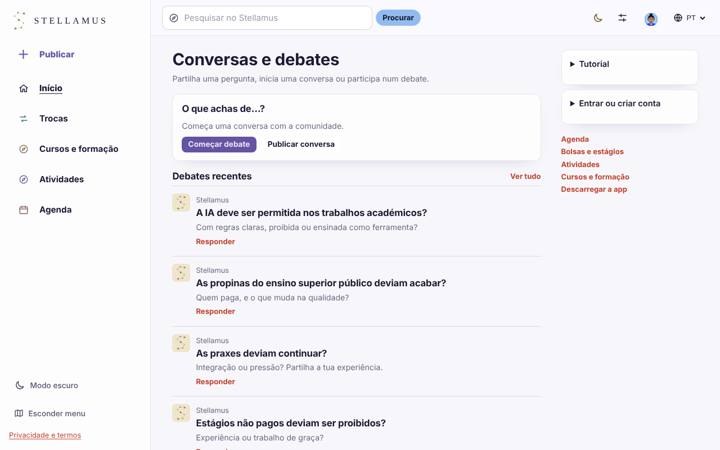
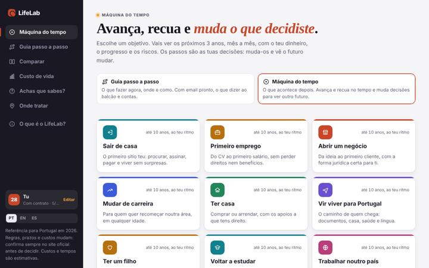
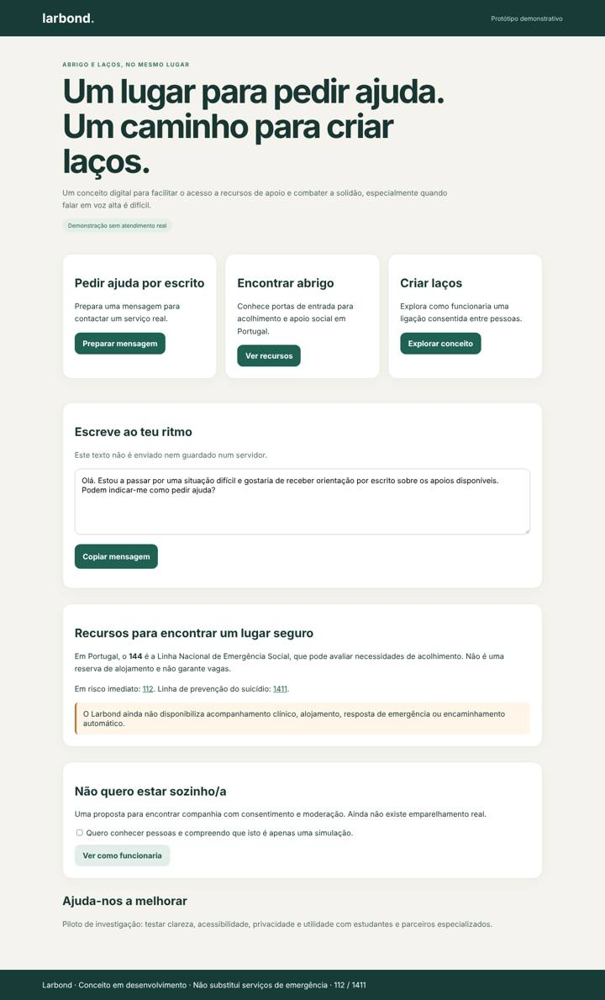

Stellamus
Troca o que sabes, encontra atividades e clubes e compara percursos de estudo numa comunidade em desenvolvimento.
Web appSupabaseComunidade
Sou licenciada em Biologia, estudante de Psicologia e criadora de projetos digitais. Transformo perguntas em experiências que se podem explorar.
Da comunidade às decisões de vida. Cada projeto tem o seu público, o seu objetivo e uma fase de desenvolvimento identificada.

Troca o que sabes, encontra atividades e clubes e compara percursos de estudo numa comunidade em desenvolvimento.

Uma máquina do tempo para decisões de vida: vê os próximos meses antes de decidir e recebe um guia passo a passo com emails, listas e calculadoras.

Um lugar para pedir ajuda por escrito, conhecer portas de entrada para abrigo e apoio social e, no futuro, criar laços com consentimento.
Reencontra antigos colegas de creche, escola e universidade pelo sítio e pelos anos em que lá estiveste.
Uma exploração de aprendizagem por simulação, com Chelas como contexto para praticar observação e tomada de decisão.
Uma investigação sobre barreiras à participação social de pessoas surdocegas, a desenvolver com quem as vive.
Estou a iniciar a prestação independente de serviços de criação de websites. O âmbito, os prazos e as revisões são combinados antes de começar.
Pedidos de alunos, marcações de aulas e inscrições.
Catálogos de cursos e gestão de candidaturas.
Pedidos de orçamento e marcações recorrentes.
Uma página para explicar o teu projeto ou negócio, mostrar serviços e tornar o contacto simples.
Programação, informações práticas e ligações para inscrições, reunidas numa experiência coerente.
Rever a estrutura e a navegação de uma página existente para tornar a informação mais fácil de encontrar.
Pedidos de orçamento, inscrições, lembretes de marcação e tarefas repetitivas. Âmbito do piloto acordado antes da implementação.
Atualizações de conteúdos e apoio técnico opcional, com âmbito definido.
Ferramentas interativas, painéis de gestão e protótipos de produtos por subscrição.
Uma página de workshops fictícia, criada para explorar uma identidade visual. Não é um projeto de cliente.
Preços de cartas e pedidos de aulas
Abrir demonstração ↗Orçamento interativo de limpeza
Abrir demonstração ↗Preços de cursos e candidatura
Abrir demonstração ↗O meu percurso começou na Biologia e continuou na Psicologia. Hoje, exploro também como as ferramentas digitais podem ajudar a compreender escolhas, encontrar oportunidades e participar.
Gosto de organizar informação complexa e dar-lhe uma forma que se possa experimentar. Os projetos apresentados aqui são trabalhos próprios em diferentes fases — com espaço para perguntas, testes e mudanças.
Perceber quem precisa e porquê.
Construir algo que se possa testar.
Ouvir e rever o que não funciona.
A Stellamus, o LifeLab, o LarBond e o Estivemus têm demonstrações publicadas. O LifeLab, o LarBond e o ConduzPT são protótipos com limitações descritas nas páginas próprias. A SENSORA Social está em investigação e não é apresentada como uma solução validada.
Sim. Explora o LifeLab e conta-me qual era a tua tarefa, onde tiveste dificuldades e o que esperavas que acontecesse. Usa um perfil fictício se preferires. O contacto está no fim da página.
Envia o objetivo, o público e os conteúdos de que já dispões. A partir daí, combinamos o âmbito, a proposta visual, os prazos, o preço e as revisões. Não existe um pagamento automático neste site.
Sim. São iniciativas de Aisha Ismail, com objetivos e identidades diferentes. Este portefólio reúne o trabalho e indica o estado de cada projeto.
Para um website, uma colaboração ou para experimentar um dos projetos, conta-me o que tens em mente.
Escrever uma mensagem